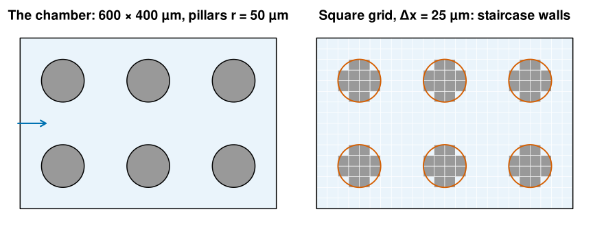
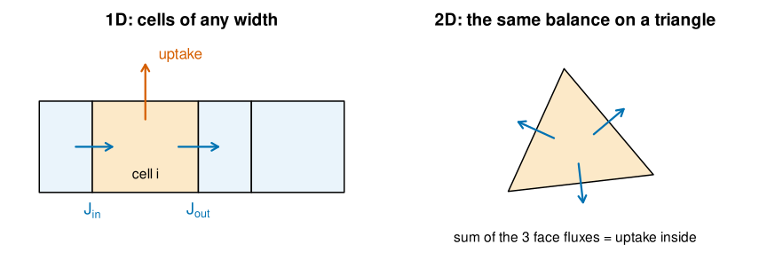
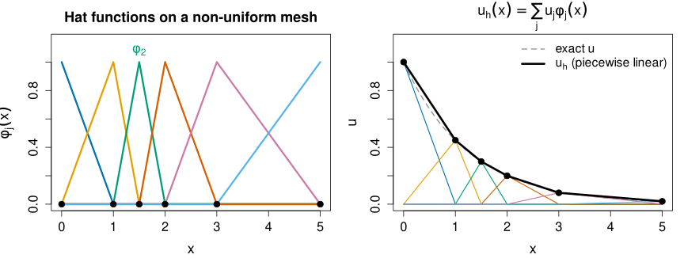
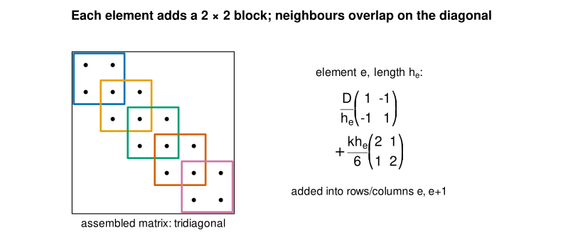
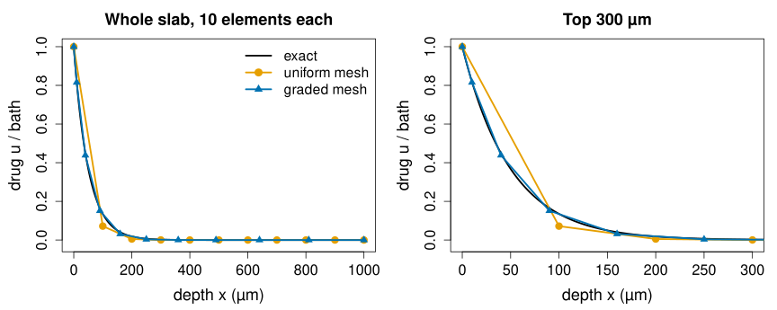
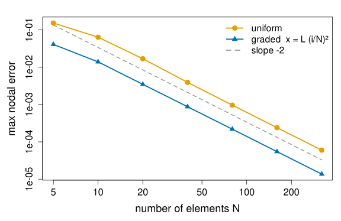
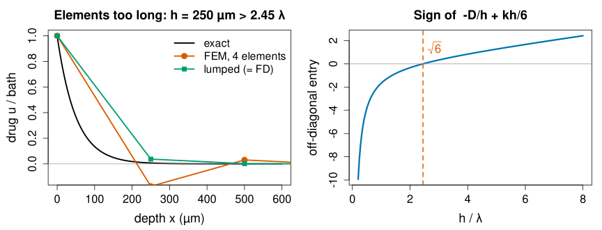
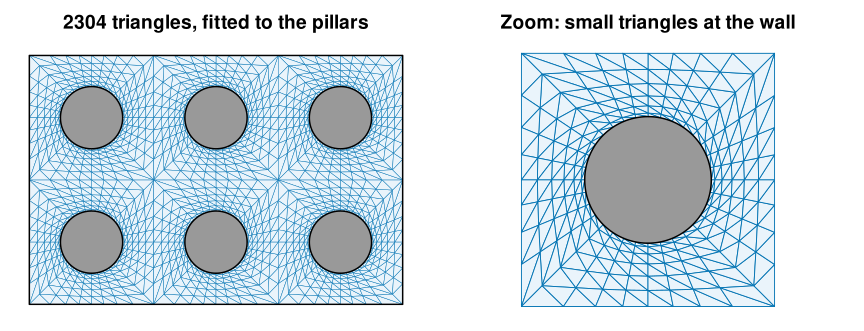
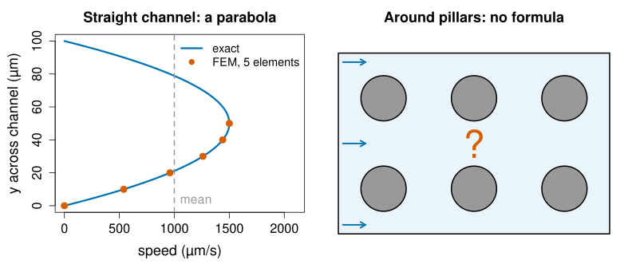

Further reading: not part of the course.
This material is not included in the course, but it is relevant if you want to learn more about the topic.
Beyond rectangles: finite elements and flow
Part 11 — Further reading (optional)
Numerical analysis for biologists
About this lecture
Part 10 put every chip on a rectangular grid. Real chips have round pillars, curved channels and cells of any shape. This lecture is an outlook: what the tools used for real chip design do differently, with one small piece done by hand.
Why finite differences struggle with curved and irregular geometry: staircase walls, refinement that spreads everywhere.
Finite volumes in one picture: conservation in every cell, whatever its shape.
Finite elements in 1D: the unknown is a sum of hat functions; the weak form; a 2 × 2 matrix per element, assembled into a tridiagonal matrix. On a uniform mesh it is the finite-difference matrix again; on a non-uniform mesh we put the points where the solution changes.
Meshes of triangles in 2D, and solving for the flow itself: Stokes flow, with the Poiseuille profile as its exact solution in a straight channel.
What COMSOL, FEniCS / Firedrake, scikit-fem and deal.II do, and when to reach for them instead of our own codes.
A chamber with pillars

Pillars hold up the roof of a wide culture chamber, or trap cells. On a square grid each round wall becomes a staircase: its position is wrong by up to \Delta x/2, and “no flux through the wall” has no clean stencil on a slanted wall.
Finer near the pillars means finer everywhere: a grid line runs across the whole chamber. Halving \Delta x costs 4× the unknowns in 2D, 8× in 3D.
Finite volumes in one picture

Cut the domain into cells of any shape. For each cell: flux in − flux out = uptake (or accumulation) inside. One equation per cell.
Flux through a face between cells i and j: D\,(u_j - u_i)/d_{ij} × face area. On a uniform square grid this gives back the five-point stencil.
What leaves one cell enters its neighbour, so the total amount is conserved exactly. This is why most flow (CFD) codes are finite-volume codes: OpenFOAM, Ansys Fluent.
Finite elements: a sum of hats

Pick nodes x_0 < x_1 < \dots < x_N, any spacing. Hat function \varphi_j: 1 at node j, 0 at every other node, straight lines in between.
Approximate u(x) \approx u_h(x) = \sum_j u_j\,\varphi_j(x): the piecewise linear interpolant through the nodal values u_j. The unknowns are the u_j, as in finite differences.
The weak form in words
Model: -(D\,u')' + k\,u = f on 0 < x < L. Instead of asking it to hold at each node, ask it to hold on average against every hat \varphi_i:
Multiply the equation by \varphi_i and integrate over the domain.
Integrate by parts: -\int (D u')'\varphi_i\,dx = \int D\,u'\varphi_i'\,dx - \big[D u' \varphi_i\big]_0^L. Now only first derivatives appear, so piecewise linear u_h is allowed.
The boundary term is the flux. At a no-flux wall it is zero, so the condition is built in (natural boundary condition). Where u is prescribed, we do not test.
Insert u_h = \sum_j u_j\varphi_j: a linear system K\mathbf u = \mathbf b with K_{ij} = \int D\,\varphi_i'\varphi_j'\,dx + \int k\,\varphi_i\varphi_j\,dx, \qquad b_i = \int f\,\varphi_i\,dx.
Element by element

On one element of length h_e the two hats have slopes \pm 1/h_e, so \int D\varphi_i'\varphi_j' = \pm D/h_e; and \int \varphi_i\varphi_j = h_e/3 (same hat) or h_e/6.
Assembly: loop over elements and add each 2 × 2 block into rows and columns e, e+1. The same loop, over triangles with 3 × 3 blocks, builds the 2D matrix.
Same matrix as finite differences
For -D u'' = f on a uniform mesh, an interior row of K\mathbf u = \mathbf b reads \frac{D}{h}\,(-u_{i-1} + 2u_i - u_{i+1}) = f\,h \quad\Longleftrightarrow\quad D\,\frac{-u_{i-1} + 2u_i - u_{i+1}}{h^2} = f, the second difference from Numerical differentiation. Check with assemble() (next slides), 5 elements of h = 100, D = 1, f = 1:
S <-assemble(seq(0, 500, by =100), D =1, k =0, f =1)S$di *100; S$off *100; S$b # K times h, and b# [1] 1 2 2 2 2 1# [1] -1 -1 -1 -1 -1# [1] 50 100 100 100 100 50
Interior: (-1, 2, -1) and f h. The last row has half weights: exactly the ghost-point no-flux row, divided by 2.
With uptake, FEM gives \tfrac{kh}{6}(u_{i-1} + 4u_i + u_{i+1}) where FD has k h\,u_i: a weighted average. Lumping it onto the diagonal gives FD exactly.
The 1D example: drug into a hydrogel slab
A hydrogel slab, L = 1 mm thick on a glass bottom, with cells embedded in it. A drug in the medium above diffuses in (D = 100 µm²/s) and the cells take it up (k = 0.04 s⁻¹).
The drug reaches only the top ~150 µm. All the action is in a thin layer; the lower 800 µm need almost no points.
Questions a biologist asks: how deep do cells see the drug? How much is in the gel (\int u\,dx \approx \lambda = 50 µm × bath concentration)?
FEM in R: assembly
assemble <-function(x, D, k, f =0) { # nodes x, any spacing n <-length(x); h <-diff(x) di <-numeric(n); off <-numeric(n -1); b <-numeric(n)for (e in1:(n -1)) { # element e: nodes e and e + 1 kd <- D / h[e] + k * h[e] /3# diagonal entries of the 2 x 2 ko <--D / h[e] + k * h[e] /6# off-diagonal entries di[e:(e +1)] <- di[e:(e +1)] + kd off[e] <- off[e] + ko b[e:(e +1)] <- b[e:(e +1)] + f * h[e] /2 }list(di = di, off = off, b = b) # tridiagonal K, load b}
di is the diagonal, off the off-diagonal (the matrix is symmetric). No ghost point: the no-flux end needs nothing.
FEM in R: solve and check
fem1d <-function(x, D, k, f =0, u0 =1) { # u(x[1]) = u0, u' = 0 at the end S <-assemble(x, D, k, f); off <- S$off rhs <- S$b[-1]; rhs[1] <- rhs[1] - off[1] * u0 # move known u0 to the rightc(u0, thomas(off, S$di[-1], c(off[-1], 0), rhs))}L <-1000; D <-100; k <-0.04; lam <-sqrt(D / k)exact <-function(x) cosh((L - x) / lam) /cosh(L / lam)xu <-seq(0, L, length.out =11) # uniform, h = 100 umxg <- L * (0:10/10)^2# graded: 0, 10, 40, 90, ...max(abs(fem1d(xu, D, k) -exact(xu)))# [1] 0.06353851max(abs(fem1d(xg, D, k) -exact(xg)))# [1] 0.0138701
Same 10 elements, 4.6 times smaller error, by moving nodes to where u changes. The uniform mesh needs 20 elements (error 0.0169) to come close.
Refine where the solution changes

The uniform mesh puts one node inside the layer (x = 100 µm) and nine where u \approx 0. The graded mesh puts four nodes in the top 100 µm.
Error against number of elements

Both meshes are second order: doubling N divides the error by 4. Grading changes the constant, not the order.
The check is the one from Part 10: refine and watch the error fall at the expected rate. Real codes adapt the mesh automatically, refining where an error estimate is large.
Failure: elements too long, negative drug

With 4 elements (h = 250 µm) FEM returns u = -0.17 at 250 µm: a negative concentration. The off-diagonal -D/h + kh/6 turns positive once h > \sqrt6\,\lambda = 122 µm.
Check: look for negative or non-monotone values; keep h below ~\lambda in layers; refine and compare. Lumping (= FD) stays positive (0.037 vs exact 0.0067) but is still wrong.
Meshes in 2D: triangles

Triangles follow round walls; small triangles where the solution changes fast (near walls), large ones elsewhere. Same assembly loop, 3 × 3 element blocks.
Mesh generators (Gmsh, the meshers inside COMSOL) build this from a CAD drawing of the chip. The matrix is sparse but no longer banded: a sparse direct or iterative solver does the work.
Solving for the flow itself
So far the flow was given. To compute it, solve for velocity \mathbf u and pressure p: Navier–Stokes, mass + momentum.
Reynolds numberRe = \rho U \ell/\mu: inertia against viscosity. Water (\rho = 1000 kg/m³, \mu = 10^{-3} Pa s) at U = 1 mm/s in a 100 µm channel: Re = 0.1.
At Re \ll 1 inertia drops out, leaving Stokes flow: \mu\nabla^2\mathbf u = \nabla p, \nabla\cdot\mathbf u = 0. Linear: no turbulence, flow follows walls smoothly, and reverses if the pressure reverses.
Numerically: three unknown fields coupled, the incompressibility constraint makes the linear system a saddle-point problem, and velocity and pressure need matched element types (e.g. quadratic velocity, linear pressure).
Straight channel: the Poiseuille profile

In a long straight channel between walls w apart, Stokes reduces to 1D: -\mu u'' = G (pressure gradient G). Exact: u(y) = \frac{G}{2\mu}\,y\,(w - y), peak 1.5 × mean. Flow plus diffusion took this as given. Our 1D code, half channel, wall u(0) = 0, symmetry u'(w/2) = 0, w = 100 µm, mean 1000 µm/s:
fem1d(seq(0, 50, by =10), D =1, k =0, f =1.2, u0 =0) # f = G/mu = 12 * mean / w^2# [1] 0 540 960 1260 1440 1500
What the tools do
All of them: geometry → mesh → weak form → assemble → sparse solve → plots. They differ in how you talk to them.
Our finite-difference codes (Part 10) are enough when:
the geometry is a slab, channel or rectangle, or can be reduced to one by symmetry;
you need many solves (parameter scans, fitting a model to data as in Part 9) and want to know every line.
A finite element / finite volume tool when:
walls are curved or irregular (pillars, cells, CAD geometry), or the problem is 3D;
you need the flow field itself, or coupled physics (flow + transport + heat);
the solution has thin layers that need local refinement.
Either way, the same checks: refine the mesh and see the answer settle; check conservation (flux in = uptake); compare with an exact or 1D special case (a straight channel must give Poiseuille).
Summary
Square grids turn round walls into staircases, and refine everywhere at once.
Finite volumes: one balance per cell of any shape; conservation is exact.
Finite elements: u_h = \sum_j u_j\varphi_j with hat functions; the weak form needs only first derivatives and builds no-flux walls in; each element adds a small block to a sparse matrix (assembly).
On a uniform 1D mesh the FEM matrix is the finite-difference matrix. Its strength is freedom of the mesh: refine where the solution changes. Too-long elements across a layer give negative concentrations.
At low Reynolds number the flow obeys the linear Stokes equations; in a straight channel the answer is the Poiseuille parabola. Around pillars it must be computed.
COMSOL, FEniCS / Firedrake, scikit-fem and deal.II do mesh → assemble → solve; check them with mesh refinement, conservation and a 1D special case.
Next:Iterative linear solvers in depth, for the large sparse systems that 2D and 3D meshes produce.